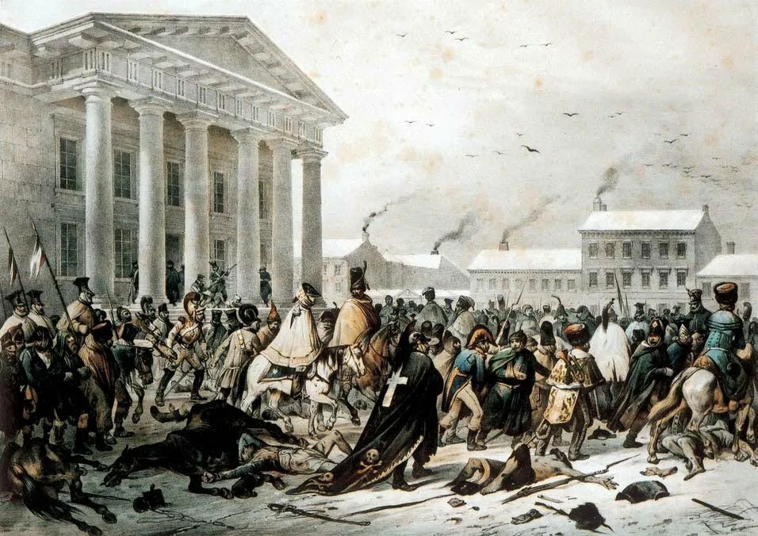
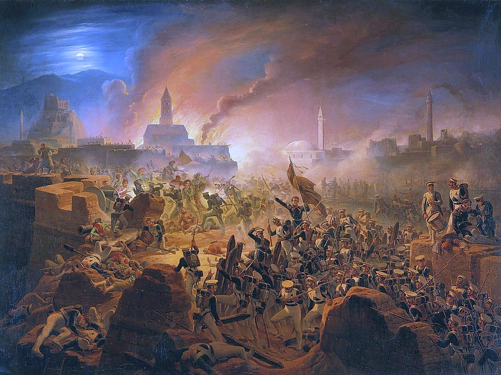
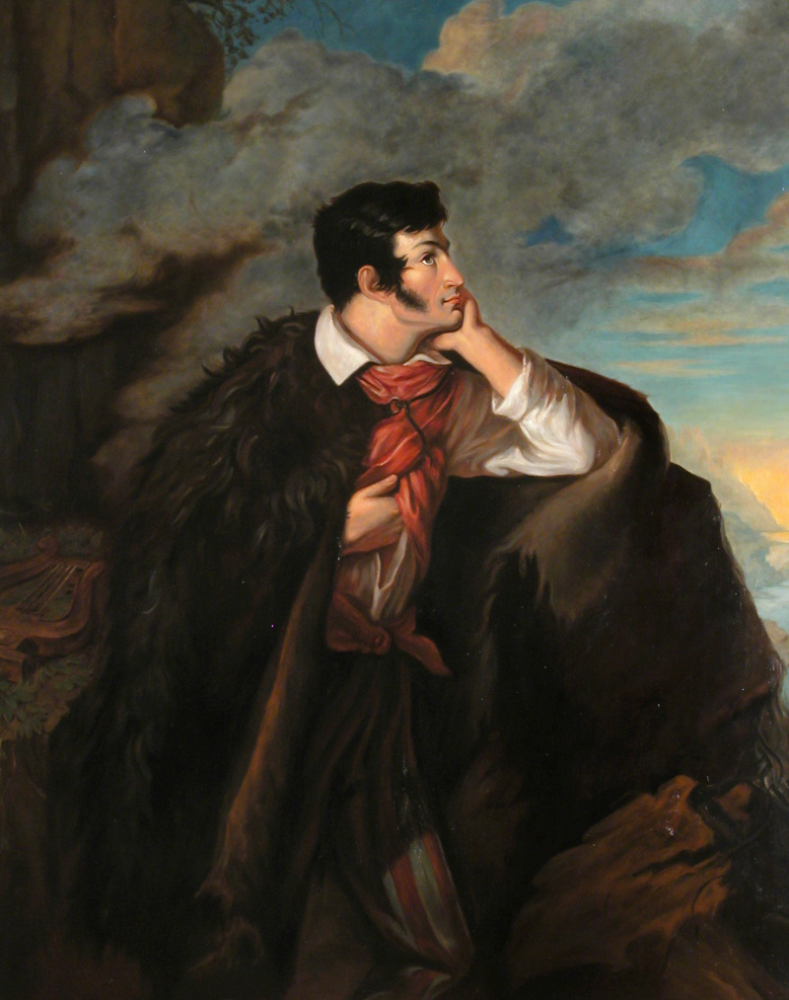
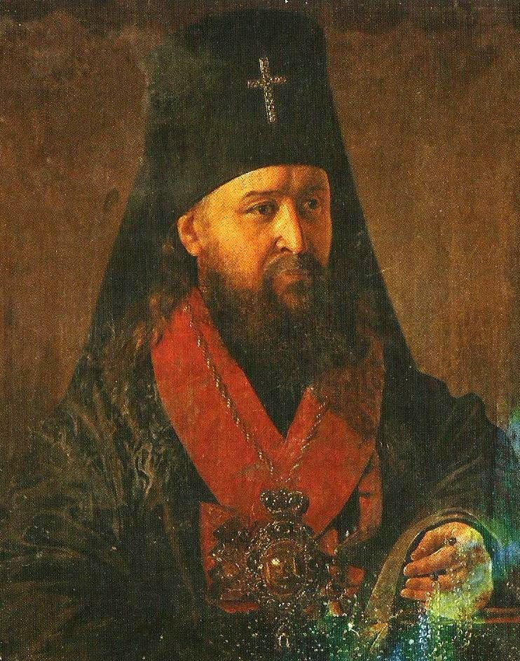

Живопись Беларуси XIX века
Живопись Беларуси XIX века прошла путь от классицизма через романтизм к реализму. В условиях Российской империи, когда после 1840 года само название «Беларусь» было выведено из официального оборота, а земли именовались Северо-Западным краем, художники искали способы выразить национальную самобытность. Большинство мастеров, родившихся на белорусских землях, работали в России, Польше и Европе, но ментально сохраняли прочную связь с родиной. Академическая выучка, полученная в Петербурге и Вильне, сочеталась в их творчестве с глубоким интересом к народному быту, историческому прошлому и родной природе.
Ян Дамель (1780-1840)
Классицизм, исторический жанр, портрет

«Отступление французов через Вильно в 1812 году» (1820-е гг.)
Ян Дамель родился в Митаве (ныне Елгава, Латвия) в семье купца. Учился в Виленском университете на художественном отделении у Франциска Смуглевича и Яна Рустема, где позже и сам преподавал. В 1820 году по сфабрикованному делу о фальшивых ассигнациях (скрывавшему преследование за участие в тайных масонских ложах) был сослан в Сибирь. В ссылке расписывал храмы в Тобольске и Томске. После помилования в 1822 году обосновался в Минске, став главным живописцем Минщины. Похоронен в крипте Кальварийского костёла.
Связь с историей
Работа «Отступление французов через Вильно в 1812 году» (1820-е гг.) — это литография по авторскому рисунку, раскрашенная акварелью. Дамель был очевидцем событий в Вильне: отступающая армия Наполеона вошла в город истощённой, страдающей от холода и болезней. Художник отказался от парадного пафоса войны: вместо прославления победителей он изобразил трагедию замерзающих, деморализованных солдат на фоне заснеженных улиц. Картина стала художественным документом краха наполеоновской эпохи, которая принесла разочарование местной шляхте, надеявшейся с помощью Наполеона восстановить независимость Великого Княжества Литовского. Дамель показал изнанку имперских амбиций, где простые люди становятся жертвами геополитических катастроф.
Основные произведения:
- «Автопортрет» (1817)
- «Отступление французов через Вильно в 1812 году» (1820-е гг.)
- «Портрет Шимона Малевского»
- «Портрет Адама Гюнтера»
Януарий Суходольский (1797–1875)
Батальный жанр, романтический реализм

«Штурм крепости Ахалцых» (1839)
Януарий Суходольский родился в Гродно в обедневшей шляхетской семье. Выбрал военную карьеру: окончил кадетский корпус, служил офицером и стал адъютантом генерала Винцента Красинского. Любовь к живописи развилась на службе — его батальные наброски заметил император Николай I. Во время Ноябрьского восстания 1830-1831 годов Суходольский встал на сторону повстанцев, после поражения эмигрировал в Рим, где учился в мастерской Ораса Верне. Позже получил прощение, вернулся на родину и работал по заказам императорского двора в Петербурге, а также в Гродно и Варшаве, получив статус академика.
Связь с историей
Картина «Штурм крепости Ахалцых» (1839) посвящена конкретному событию Русско-турецкой войны 1828–1829 годов — взятию турецкой крепости Ахалцых русскими войсками 15 августа 1828 года. Суходольский, сам бывший военным, создал не парадное полотно, а показал жестокость штурма: сражение среди огня, дыма и удушающего смрада. Для белорусского зрителя эта работа важна тем, что её автор — уроженец Гродно, прошедший путь от повстанца 1830–1831 годов до академика, — запечатлел войну как тяжёлый труд и страдание простых солдат, а не как триумф империи.
Основные произведения:
- «Штурм крепости Ахалцых» (1839)
- «Осада крепости Абасабад»
- «Сдача штандартов у Джаван-Булака»
- «Заключение Туркманчайского мира»
- «Переход через Березину» (1859)
Валентий Ванькович (1799/1800–1842)
Романтизм, портретный жанр

«Мицкевич на скале Аю-Даг» (1828)
Валентий Ванькович родился в имении Калужицы Минской губернии в старинной шляхетской семье (год рождения — 1799 или 1800). Начальное образование получил в Полоцкой иезуитской коллегии, затем изучал живопись в Виленском университете у Яна Рустема. Как один из лучших учеников был отправлен в Петербургскую академию художеств. Вернувшись в Минск, открыл мастерскую в отцовской усадьбе Малая Слепянка (ныне Дом Ваньковичей в Минске), где создал галерею портретов современников. После восстания 1830 года атмосфера в империи стала удушающей, и он уехал в Европу. Умер в Париже от туберкулёза на руках близкого друга Адама Мицкевича.
Связь с историей
Портрет «Мицкевич на скале Аю-Даг» (1828) стал хрестоматийным манифестом романтизма и духовным символом поколения белорусской интеллигенции 1820–1830-х годов. Ванькович написал его в Санкт-Петербурге под впечатлением от цикла Адама Мицкевича «Крымские сонеты» (1826), особенно от сонета «Аюдаг». Поэт был сослан царскими властями в центральные губернии России за участие в тайных обществах «филоматов» и «филаретов»; поездка в Крым была уже оттуда. Фигура Мицкевича в кавказской бурке, припавшего к скале на фоне бушующего моря, метафорически отражала трагедию «внутренней эмиграции» и тоску по потерянной родине, которую переживала вся разгромленная культурная элита края.
Основные произведения:
- «Мицкевич на скале Аю-Даг» (1828)
- «Портрет Войцеха Пулавского»
- «Портрет мужчины в жёлтом жилете»
- «Портрет Андрея Товянского»
- «Портрет Станислава Хоминского»
- «Портрет старого Саплицы»
Иван Хруцкий (1810–1885)
Академизм, реализм, натюрморт, портрет

«Портрет Иосифа Семашко» (1842)
Иван Хруцкий родился в местечке Ула Витебской губернии в семье греко-католического (униатского) священника. Обучался в Полоцком высшем пиарском училище, затем уехал в Петербург, где стал вольнослушателем Императорской академии художеств и брал уроки у К. Брюллова и А. Варнека. Хруцкий снискал оглушительный успех в столице благодаря роскошным, детально прописанным натюрмортам, за которые получил звание академика живописи. В 1839 году покинул Петербург, а в 1844-м приобрёл землю Захарничи под Полоцком, построил дом по собственному проекту и перешёл к более сдержанному, камерному искусству, отражающему жизнь родного края.
Связь с историей
«Портрет Иосифа Семашко» (1842) напрямую связан с одной из самых драматичных вех в истории Беларуси — Полоцким церковным собором 1839 года, который ликвидировал Униатскую (греко-католическую) церковь в Российской империи и перевёл более 1,5 миллиона белорусских крестьян в православие. Хруцкий, будучи сыном униатского священника, по иронии судьбы с 1845 по 1855 год выполнял многочисленные заказы своего покровителя — литовского митрополита Иосифа Семашко, главного инициатора этой конфессиональной реформы. Портрет 1842 года — один из ранних в этой серии — зафиксировал момент окончательного идеологического и религиозного поглощения белорусских земель империей.
Основные произведения:
- «Плоды и цветы» (1838)
- «Портрет Иосифа Семашко» (1842)
- «Портрет жены» (1845)
- «Портрет Ксаверия Бубновского» (1845)
- «Портрет Михаила Ромера» (1847)
- «Портрет сына»
- «Семейный портрет»